Project Overview
Classic Furniture e-commerce website which is built on the MERN stack with a dynamic admin panel. Where uses React.js & Tailwind CSS for frontend, NodeJS & ExpressJS for backend and MongoDB for database. It is designed to be more scalable and developed for a load free super fast and maintain a high level of security within this ecommerce platform.
Follow the steps below for successful installation of this project on your computer. Hope you can execute this project very easily.
How to Install Node.js and NPM on Windows
Here, we are going to explain the installation process step-by-step.
Step 1: Download the Installer
Download the Windows Installer from NodeJs official website. Make sure you have downloaded the latest version of NodeJs. It includes the NPM package manager.
Here, we are choosing the 64-bit version of the Node.js installer.
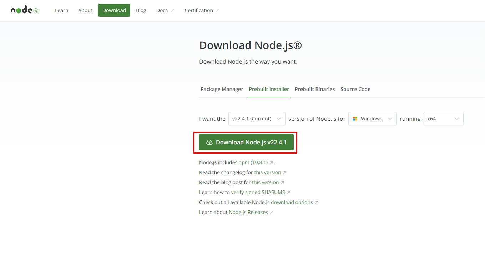The LTS (Long-term Support) version is highly recommended for you. After the download of the installer package, install it with a double-click on it.
Now .msi file will be downloaded to your browser. Choose the desired location for that.
Step 2: Install Node.js and NPM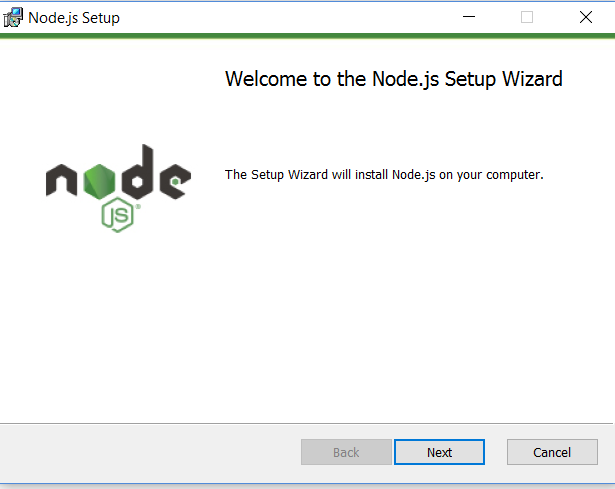
After choosing the path, double-click to install .msi binary files to initiate the installation process. Then give access to run the application.
You will get a welcome message on your screen and click the “Next” button. The installation process will start.
-
Choose the desired path where you want to install Node.js.
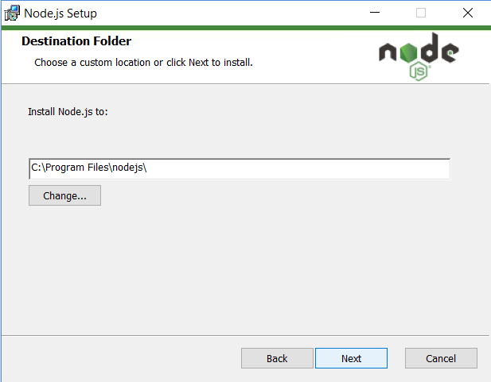 - By clicking on the Next button, you will get a custom page setup on the screen. Make sure you choose npm package manager , not the default of Node.js runtime . This way, we can install Node and NPM simultaneously.
You should have 143MB of space to install Node.js and npm features.
The following features will be installed by default:
- Node.js runtime
- Npm package manager
- Online documentation shortcuts
-
Add to Path
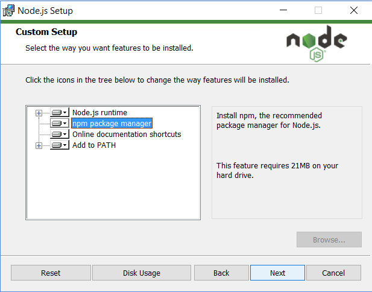 -
Bang! The setup is ready to install Node and NPM. Let’s click on
the Install button so hard!
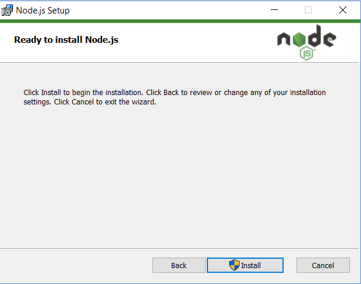
-
If you have a doubt whether you have installed everything
correctly or not, let’s verify it with “Command Prompt”.
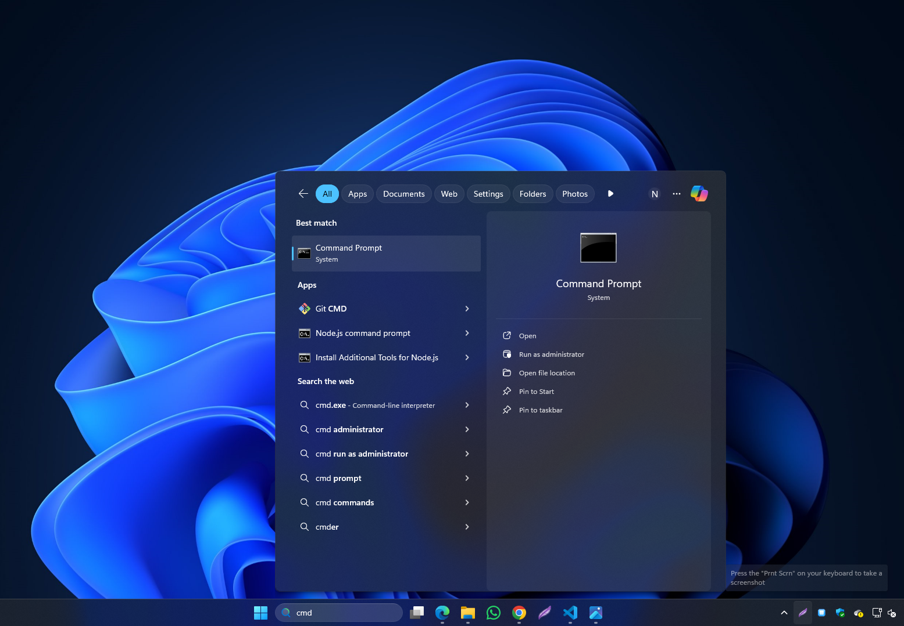
Command Prompt window will appear on the screen.
To confirm Node installation, type
node -v command.
To confirm NPM installation, type
npm -v command.
And you don’t need to worry if you see different numbers than mine as Node and NPM are updated frequently.
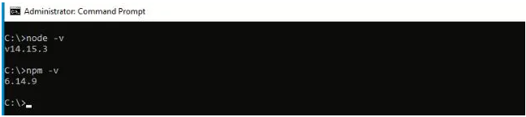How to Install Visual Studio Code on Windows
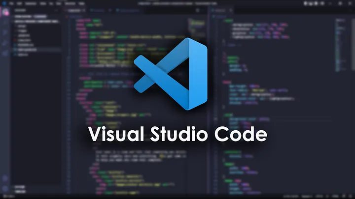Hey! Welcome back. Today I’ll highlight the simple steps to download and install Visual Studio Code on Windows 10.
- Visit the official website to download the latest Visual Studio code version. click here to visit the official website
-
Click on the “Download for Windows” button and download the latest
version.
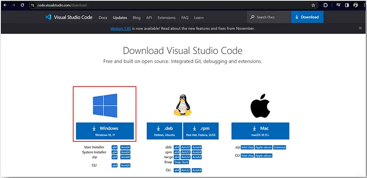
You will be navigated to the following page when the download process starts.
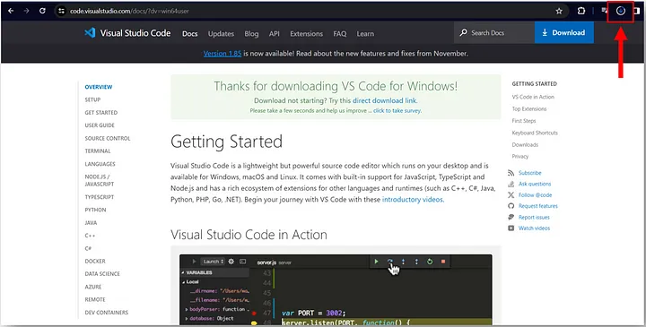- Once the download is complete, go to the installer file (VSCodeUserSetup-x64–1.85.1) and double-click on it to run the installer.
- Follow these instructions to complete the installation process.
 Step 2: Change the location by
using the “Browse…” button.
(Otherwise, you can keep the default location) Click “Next”
Step 2: Change the location by
using the “Browse…” button.
(Otherwise, you can keep the default location) Click “Next” 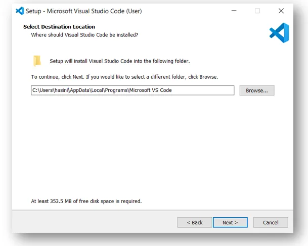 Step 3: “Select Start Menu Folder” window keep the default and click “Next”
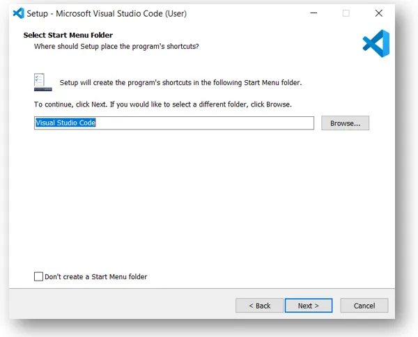
Step 4: In the “Select Additional Tasks” window check-in your preferred options and click “Next”
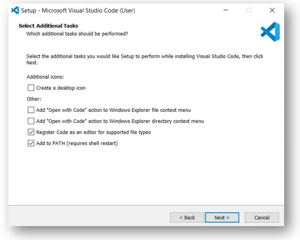
Step 5: Click the “Install” button to start the installation process
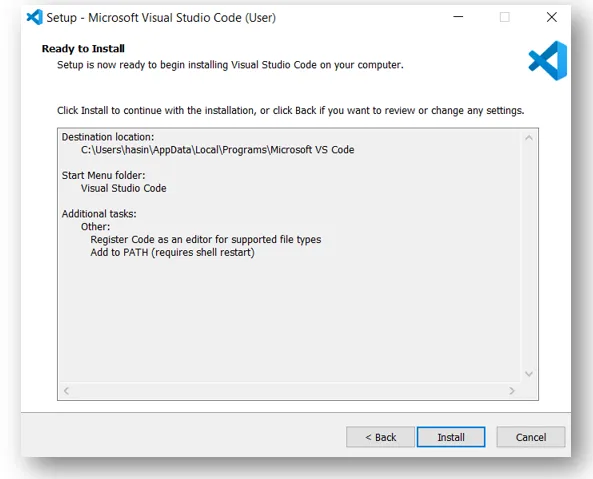
Step 6: Checked “Launch Visual Studio Code” option and click the “Finish” button to complete the installation process
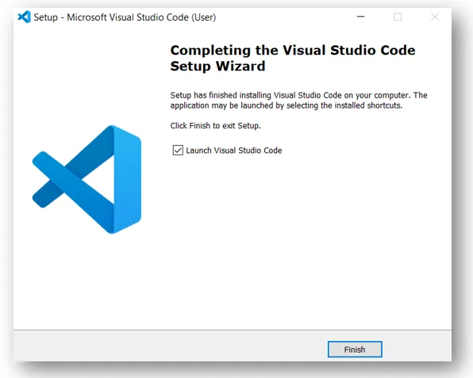
Finally, Visual Studio Code will automatically launch after the installation is complete.
That’s it! Now you’ve successfully installed Visual Studio Code on your Windows 10 machine. You can now start using it to perform your tasks.
Happy learning!How to Setup Node Js Backend File
Prerequisites
- Ensure you have Node.js and npm (Node Package Manager) and VSCode ( Visual Studio Code ) installed on your machine.
Step-by-Step Guide
1. Extract the main_file folder:
-
If the main_file folder are in a compressed format, extract
them. Otherwise, navigate to the
"main_file"folder directly.
2. Open the main_file folder and extract code folder
-
If the code folder are in a compressed format, extract them.
Otherwise, navigate to the
"code"folder directly.
3. Open the code folder and extract node_backend folder
-
If the node_backend files are in a compressed format, extract
them. Otherwise, navigate to the
"node_backend"folder directly.

4. Open the node_backend folder
- Change directory to the "node_backend" folder.
5. Open Command Prompt:
-
Type
"cmd"in the location bar of the file explorer to open a Command Prompt window in the current directory.
6. Open the project in Visual Studio Code:
-
In the Command Prompt, type
"code ."command to open the project in Visual Studio Code.
7. Install project dependencies:
-
In the terminal (inside Visual Studio Code or Command Prompt),
"npm install"command to install the necessary packages.
8. Run the project:
-
To start the project, type
"npm run dev"command in the terminal (inside Visual Studio Code or Command Prompt).
9. Access the project in your browser:
-
Open your web browser and navigate to
"http://localhost:5000/"to see the project running.
Setting Up and Running the React Frontend
Prerequisites
- Ensure you have Node.js and npm (Node Package Manager) and VSCode ( Visual Studio Code ) installed on your machine.
Step-by-Step Guide
1. Extract the main_file folder:
-
If the main_file folder are in a compressed format, extract
them. Otherwise, navigate to the
"main_file"folder directly.
2. Open the main_file folder and extract code folder
-
If the code folder are in a compressed format, extract them.
Otherwise, navigate to the
"code"folder directly.
3. Extract the react_frontend folder:
-
If the react_frontend files are in a compressed format, extract
them. Otherwise, navigate to the
"react_frontend"folder directly.
4. Open the react_frontend folder:
- Change directory to the `react_frontend` folder.
5. Open Command Prompt:
-
Type
"cmd"in the location bar of the file explorer to open a Command Prompt window in the current directory.
6. Open the project in Visual Studio Code:
-
In the Command Prompt, type
"code ."command to open the project in Visual Studio Code.
7. Install project dependencies:
-
In the terminal (inside Visual Studio Code or Command Prompt),
"npm install"command to install the necessary packages.
8. Handle installation errors (if any):
-
If you encounter any errors during the installation, type
"npm install --force"force the installation of the necessary packages.
9. Now set Base Url file. If Your backend run locally set url with http://localhost:5000/ if port is 5000 Or backed is live set the live url.
-
Here is an example: if you want run locally:
BASE_URL: "http://localhost:5000/api/v1"
if you want to run live server:BASE_URL: "https://example.com/api/v1"
10. To locate baseURL file in vscode sidebar you can find src folder
11. Inside src folder open utils folder

12. Inside utils folder you can find baseURL file.
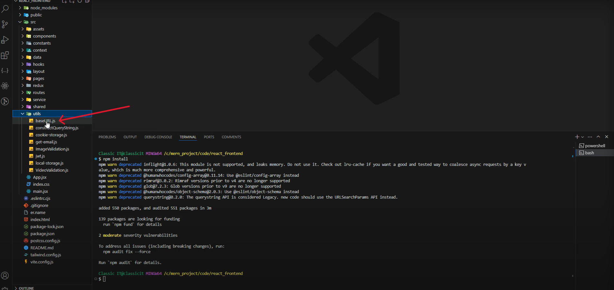
13. Open baseURL file and here you can change your baseURL.
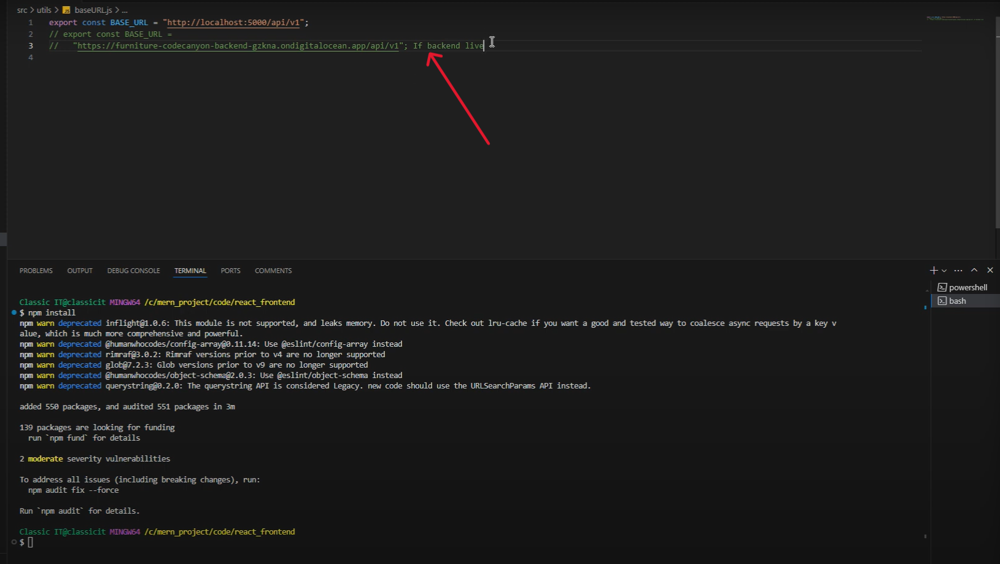
14. Run the project:
-
To start the project, type
"npm run dev"command in the terminal (inside Visual Studio Code or Command Prompt).
15. Access the project in your browser:
-
Open your web browser and navigate to
"http://localhost:3000/"to see the project running.
Update your Site
1. Click user icon for login
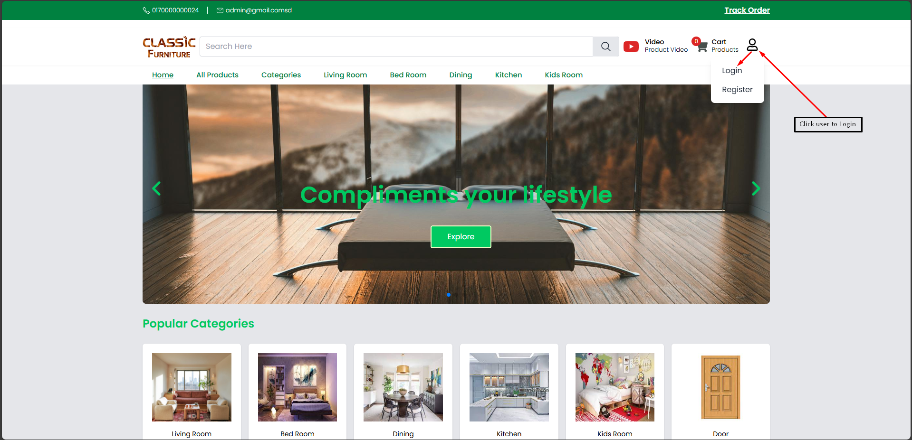
2. Click copy button to fill automatic phone number and password for login in admin account
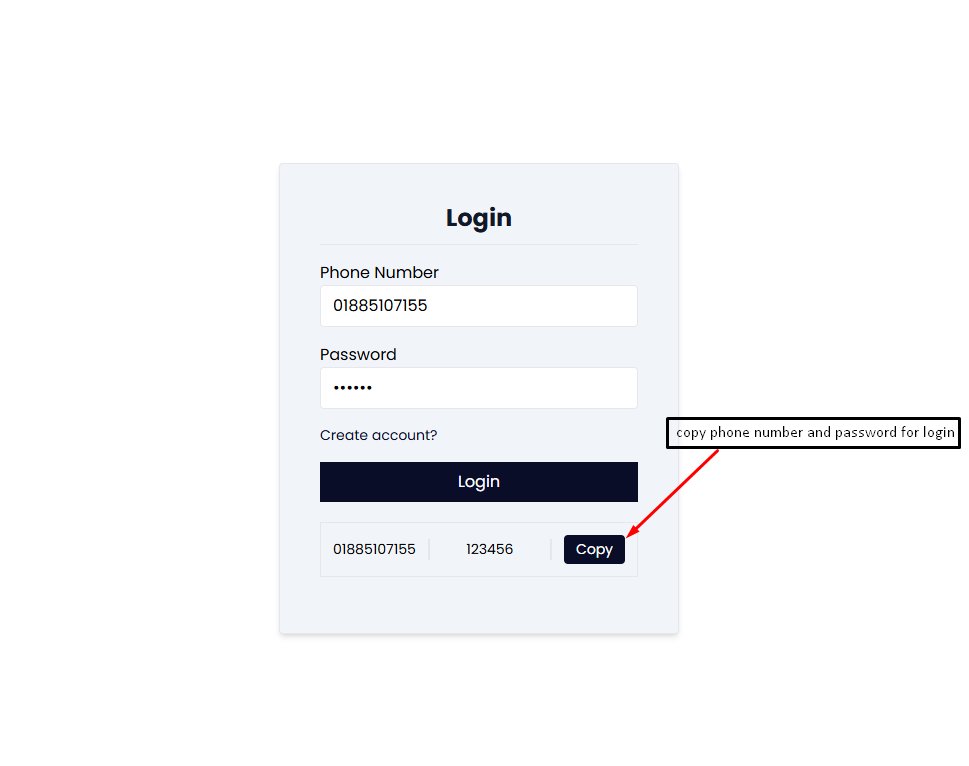
3. To visit admin panel type "/admin" after your
base URL.
Example: https://citfurniture.classicitltd.com/admin
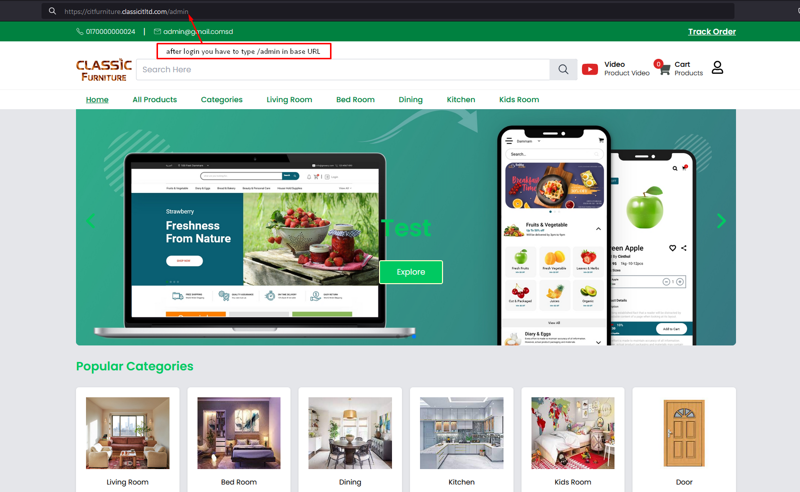
4. Click Setting button to visit Site Setting page.
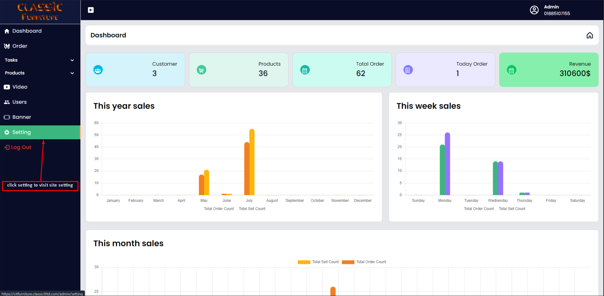
5. Click Edit button for update your site setting
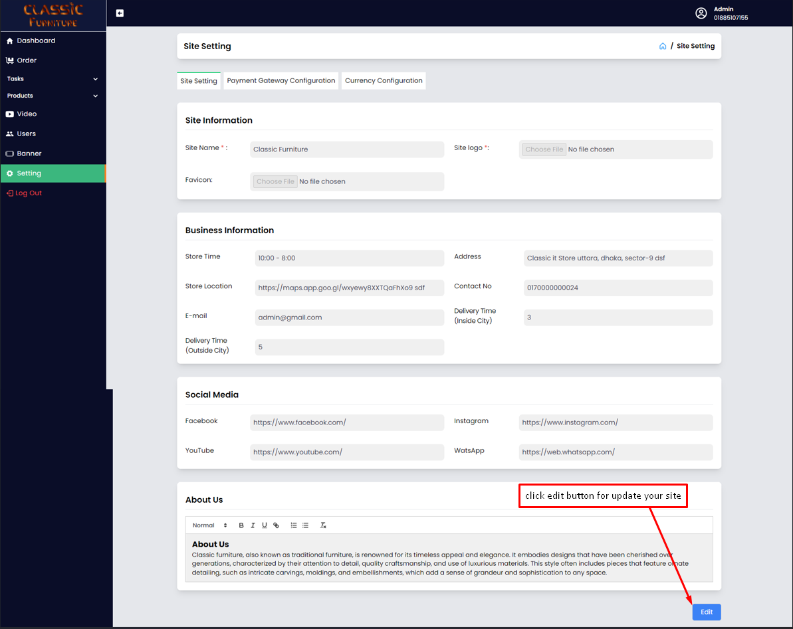
6. After change your necessary site information, click Save button.
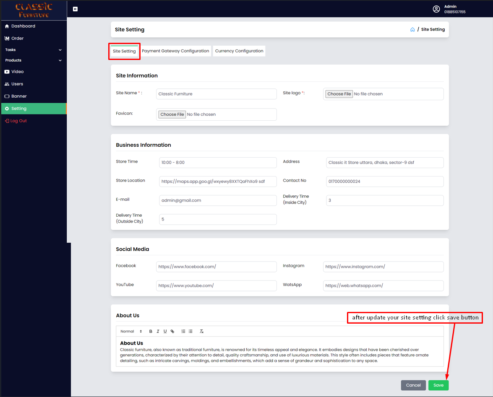
Update your Site Policy
In documentation, Site Setting page you can see how to login admin panel. After visit admin panel go to Setting page.In Site Setting tab bottom of the page you can find Site Policy
Click edit button for change your site policy. After Change your policy click Save button for update policy.
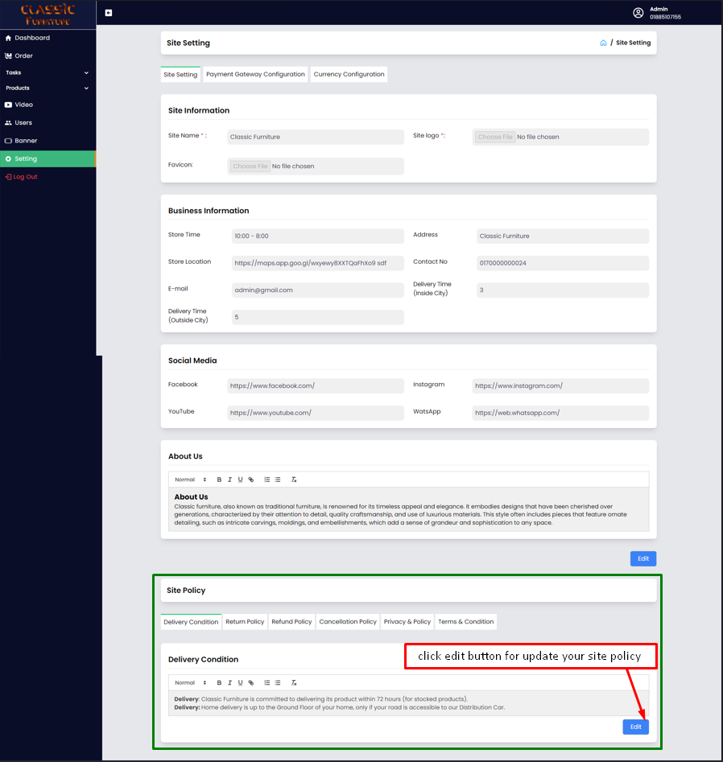Update your Payment Gateway Configuration
In documentation, Site Setting page you can see how to login admin panel. After visit admin panel go to Setting page. Click Payment Gateway Configuration tab
Click edit button for change your Payment Gateway. Here you can active or inactive your payment gateway method by clicking toggle button.
For using SSL Commerz in testing purpose inactive live toggle button. If live toggle button is active that means SSL Commerz is live.
After finish your necessary change click Submit button for save payment configuration.
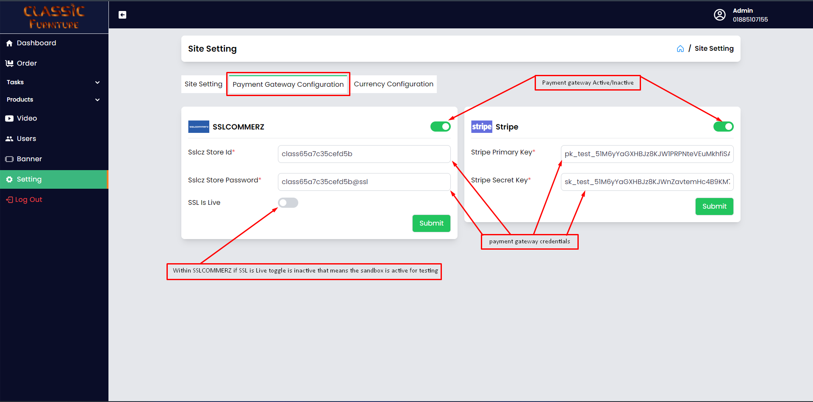Update your Currency Configuration
In documentation, Site Setting page you can see how to login admin panel. After visit admin panel go to Setting page. Click Currency Configuration tab
Click edit button for change your currency symbol and currency code. After change, click save button for save your currency configuration.
Example: I want to BDT currency, than Currency Symbol will be ৳ and Currency Code will be BDT
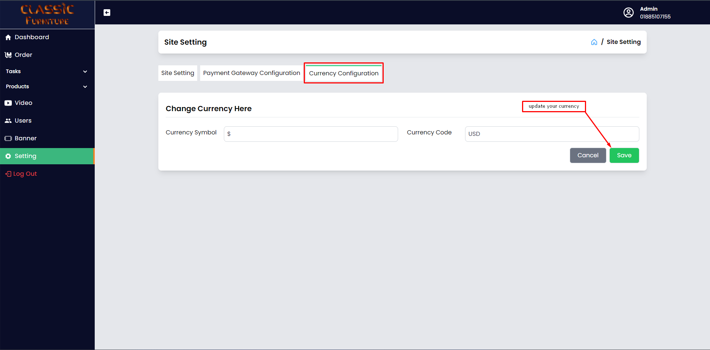Video Overview
Support
If you encounter any issues or have questions, please reach out for support:
- Email : info@classicit.com.bd
- Phone : +880 1711-933303
- Website : https://classicit.com.bd/